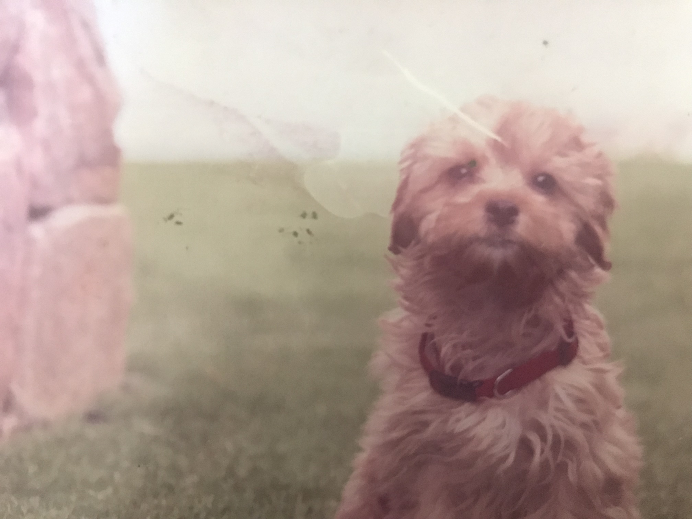

Aby is a student pursuing a bachelor’s degree in IT at RMIT, Melbourne. Being born in Australia to Indian parents, he fluent in both English and Malayalam-an Indian dialect spoken in the south-western state of Kerala. He graduated from John Monash Science School and began to pursue a degree in Medical Science before transferring to his current degree. He is also an accomplished magician and has consulted for multiple award-winning Fringe shows (2020, 2021, 2022) and several corporate audiences including Coca-Cola. He writes in third person because the drafts in first person made him feel pretentious...and yet writing in third person doesn't seem to alleviate that sensation either. He currently resides in Point Cook with his cavoodle, Annie, as well as his parents and 3 siblings.
